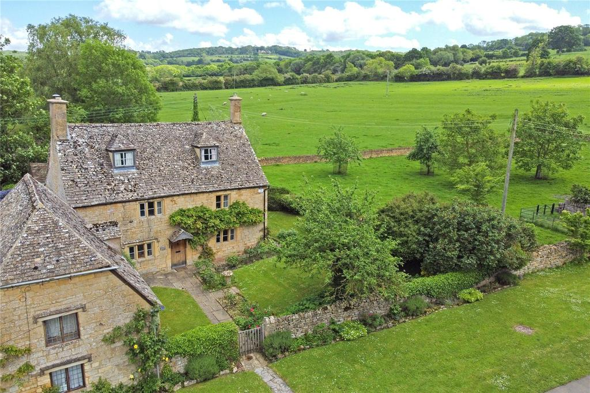

Insulating a listed building is a comfort project and a consent project at the same time. Original plasterwork, panelling, cornices and window details are the reason the building is listed, or a large part of it. A thick, generic lining can bury those features and change room proportions. A thin, vapour-open system can improve comfort while leaving the character readable. Internal insulation will almost always require listed building consent. BreatheTherm is specified around that fact, not around it.
What listed building consent covers that planning permission does not
Planning permission is about development as the planning acts define it. Internal insulation, done without altering the exterior, often falls outside that. Listed building consent is about character. It applies to the interior as well as the exterior, and to fabric that is not visible once the job is finished.
If the building is listed, assume consent is required before you fix insulation to historic masonry, strip plaster, alter linings, or change window reveals. Conservation-area designation is a different control and is mainly concerned with appearance from the street. Do not treat a lack of planning permission as permission to start.
Local planning authorities vary in how they handle energy upgrades, but they do not vary on the legal point. Works that affect the character of a listed building need consent. Internal wall insulation almost always does.
How internal insulation changes historic interiors
The usual damage is not a demolished facade. It is millimetres.
A 50 or 75 mm board plus plasterboard eats skirtings, loses the break of a cornice, and brings window boards out of line with the sash. Panelling cannot be rolled back to suit a foam thickness. Shutters no longer close. The room that made the listing case becomes a smaller, flatter version of itself.
There is also the fabric you only see when you open it up. Lime plaster on riven lath, earlier decorative schemes, and the face of the masonry are all part of the building's history. A specification that assumes they can be stripped for convenience will struggle in committee, and it should.
Thin insulation systems help because they preserve those features and minimise changes to room proportions. They do not remove the need for consent. They make a consentable scheme more likely.
Thin vapour-open insulation that protects character
Where the wall plane is plain and the room can accept it, PerliTherm is the insulating body: about 50 mm of expanded perlite bound with hydraulic lime. It is mineral, vapour-open, and finished in lime rather than in a modern board.
Where the constraint is a reveal, a shutter box, panelling or a cornice that must stay, AeroGel is the 10 mm move. Lambda 0.017 W/m·K, used with AeroBond, so the thermal upgrade happens without rebuilding the joinery around it.
PerliFinish is the lime face. It can meet existing plaster on honest lines rather than hiding a gypsum skim over foil. The internal wall layer guide shows how those layers sit together. Thickness is a heritage decision as much as a thermal one.
What conservation officers ask to see
A conservation officer is looking for three things: that you have understood the building, that the materials are compatible, and that moisture has not been ignored in the rush to a U-value.
Compatible, on a traditional wall, means vapour-open and reversible enough to be argued. Mineral lime and perlite meet that test more easily than foil-faced foam. WTA 6-4 is the guidance many officers already recognise for internal insulation of historic fabric. Hygrothermal assessment is what you add when the wall, the exposure or the thickness is not a standard case.
Drawings should show the junctions, not only the wall plane: window reveals, floor zones, decorative plaster, and any panelling left in place. A product brochure without those details is not an application.
How BreatheTherm is specified for listed buildings
We do not start with a thickness. We start with the features, the masonry, and the client's brief, which is the method in reading a wall before specifying thickness.
BreatheTherm then offers an adaptable build-up. PerliTherm where the plane can take it. AeroGel where it cannot. Lime coats throughout, so the wall can still dry. Site-specific hygrothermal notes where the risk needs to be shown, not asserted.
The architect pack is built for this conversation: WTA data, modelling notes, CAD details. Homeowners who are about to appoint an architect, or who already have one, can book a free assessment so the consent drawings describe a wall that has actually been seen.
Preparing a consent application for internal insulation
Write the heritage significance first, even if a consultant will later polish it. Say what must not move: plaster, panelling, joinery, floor structures. Then say what the insulation will do at each of those points, in millimetres.
Attach a vapour-open specification, not a generic insulation data sheet. Include the drying argument, because officers have seen vapour-closed linings fail. If the building is occupied, describe how rooms will be phased so the house remains usable.
Consent is not a barrier to insulating a listed building. It is the process that keeps the thermal upgrade honest. Start it before anyone prices a full strip-out.